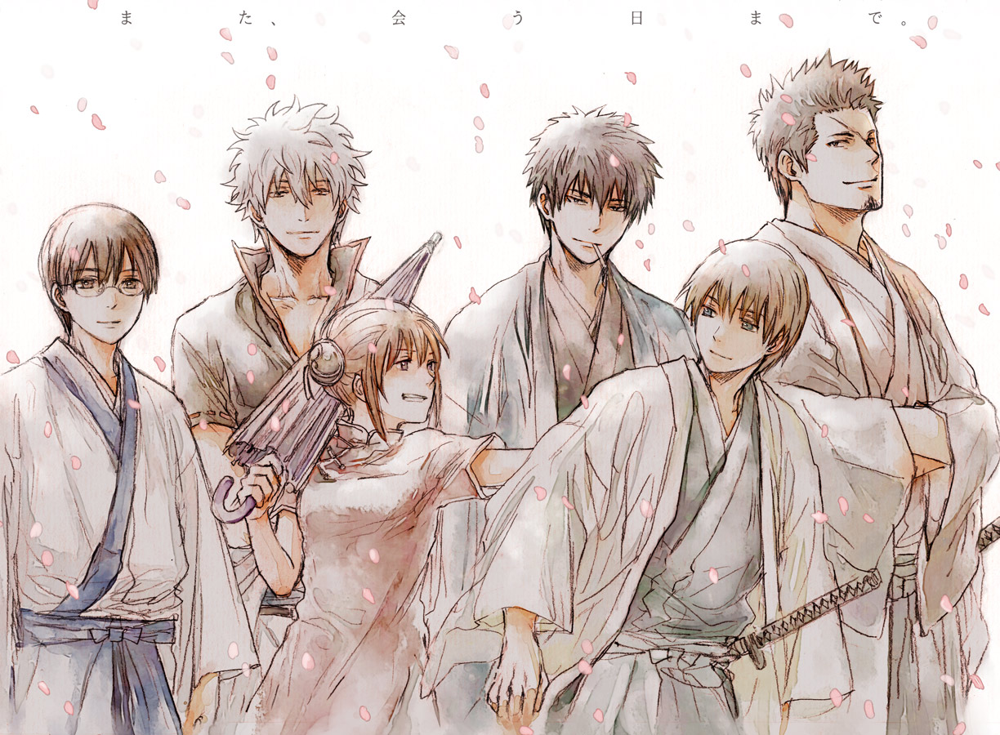

Les recommandations du Shoggoth
Gintama
Les extraterrestres au pays du soleil levant
Diffusion : Intermittent entre Printemps 2006 et Hiver 2018
Format : 4 Saisons, pour un total de 350 épisodes :
- Gintama (là) : 201 épisodes
- Gintama' (par ici et là) : 64 épisodes
- Gintama° (là-bas) : 51 épisodes
- Gintama. (ici, là, et encore là) : 25 + (silver soul arc) épisodes
Nous allons donc aborder Gintama, une plutôt longue série qui n'a pas finit de vous faire rire !
Genres : Action, Science-fiction, Comédie, Historique, Parodie, Samourai, Shonen
Synopsis :
Les Amantos, des extraterrestres venus des quatre coins de la galaxie, on envahi la terre et pris le pouvoir sur le Japon féodal. Suite à cette invasion, un bannissement des épées a été proféré et les samourais japonais sont traités avec mépris.
Cependant, un homme, Sakata Gintoki, possède toujours l'âme d'un samourai, bien que son amour des friandises et son travail d'homme à tout faire ne le laissent pas deviner. L'accompagnant dans son activité "multiservices", on trouve Shimura Shinpachi, un garçon à lunettes avec un coeur fort, Kagura, avec son ombrelle et son appétit visiblement sans fin, ainsi que Sadaharu, leur chien de compagnie un poil plus grand que la moyenne. Bien sur, leurs requêtes ne sont pas toujours simples, et ils croisent souvent la police, des rebelles plutôt hétéroclites, des assassins, le tout menant souvent à des conséquences drôles et malencontreuses.